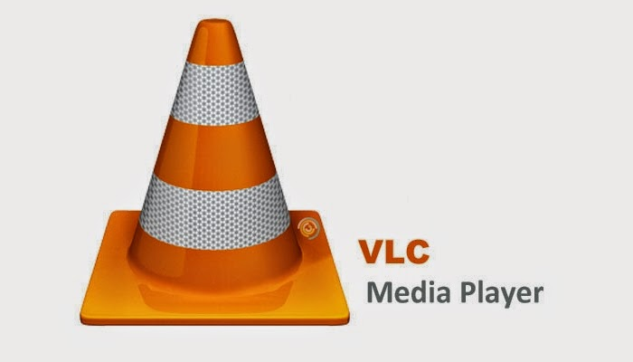
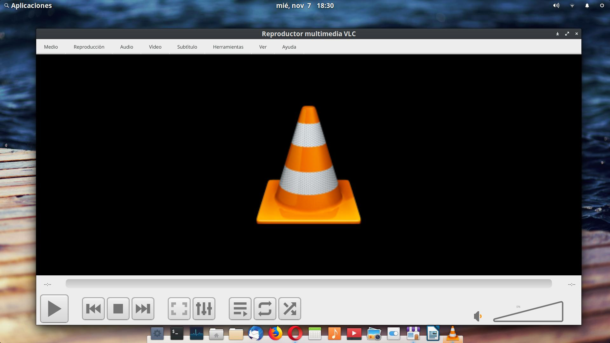
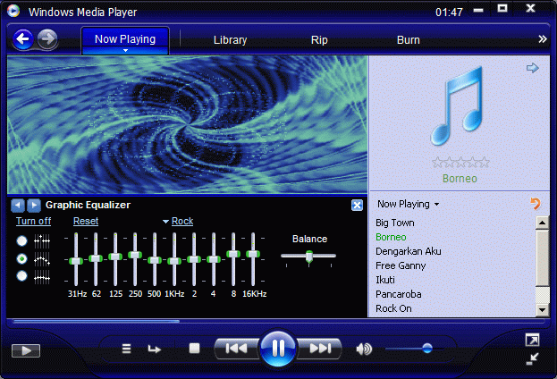

VLC
Released Date
Developers
Software Type
Android
Chrome Os
iOS, Apple TV
Windows Phone
Windows Mobile
Written In
GUI: C++ (with Qt), Objective-C (with Cocoa), Swift
Bundled Extensions: Lua
Usually C++ or plain C
Available in
| Topics | VLC | Windows Media Player |
|---|---|---|
| Icon |  | |
| Interface |  |  |
Released Date |
1st of February,2001 | 22nd of July,2009 |
Developers |
VideoLan | Microsoft |
Software Type |
FOSS/Media Player | Proprietary/Media Player |
| Operating Systems |
Windows, Linux, & macOS Android Chrome Os iOS, Apple TV Windows Phone |
Microsoft Windows Windows Mobile |
Written In |
Core: C GUI: C++ (with Qt), Objective-C (with Cocoa), Swift Bundled Extensions: Lua |
Usually C++ or plain C |
Available in |
48 languages | - |